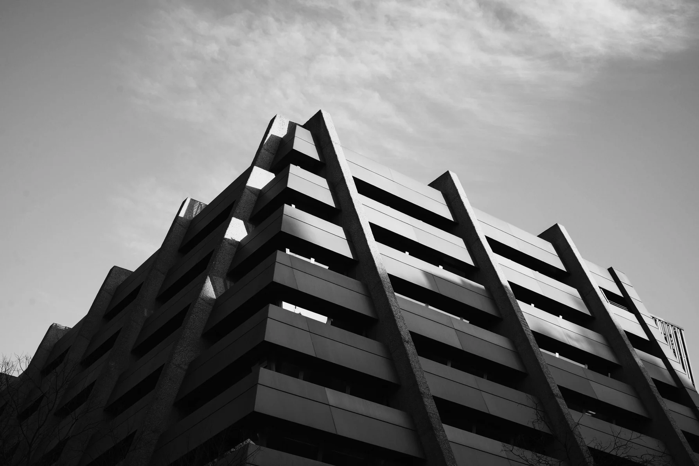

Struktur Kuat.
Hasil Presisi.
Masa Depan
Lebih Pasti.
Solusi konstruksi profesional untuk hunian, bangunan komersial, infrastruktur sipil, dan berbagai kebutuhan pembangunan.

Membangun kepercayaan, bukan sekadar bangunan.
CV Global Sinergi Nusantara adalah perusahaan yang bergerak di bidang konstruksi dan infrastruktur, dengan komitmen menghadirkan pekerjaan berkualitas melalui perencanaan dan koordinasi yang terstruktur.
Dengan pendekatan profesional, kami menangani kebutuhan hunian, bangunan komersial, dan pekerjaan sipil. Setiap tahapan dikelola dengan perhatian pada presisi, kualitas, serta komunikasi yang terbuka.
Satu mitra.
Beragam solusi.
Mulai dari fondasi pembangunan hingga dukungan operasional proyek, kami hadir untuk kebutuhan konstruksi Anda.
Lihat Semua LayananKonstruksi
Bangunan
Rumah, ruko, gedung umum, sekolah, pabrik, dan fasilitas komersial.
02 / 04Infrastruktur
Sipil
Jalan, penyiapan lahan, pagar, tembok penahan, dan jaringan utilitas.
03 / 04Sewa
Alat Berat
Excavator, dozer, dan truk untuk mendukung pekerjaan di lapangan.
04 / 04Material
Konstruksi
Penyediaan bahan konstruksi dari material struktural hingga finishing.
Setiap detail
punya cerita.
Cuplikan dokumentasi konstruksi yang ditampilkan dalam company profile GSN.
Lihat Semua Dokumentasi


Dokumentasi berasal dari company profile perusahaan. Nama, lokasi, tahun, dan rincian setiap proyek akan ditambahkan setelah dikonfirmasi.
Langkah terencana.
Eksekusi terukur.
Proses kerja kami mengikuti tahapan terstruktur agar kebutuhan, waktu, dan koordinasi proyek berjalan selaras.
Konsultasi
Memahami kebutuhan, tujuan, dan kondisi awal proyek.
Survei
Memeriksa lokasi dan mengidentifikasi kebutuhan pekerjaan.
Perencanaan
Menyusun kebutuhan material dan jadwal pelaksanaan.
Pelaksanaan
Mengerjakan pekerjaan dengan pengawasan dan koordinasi.